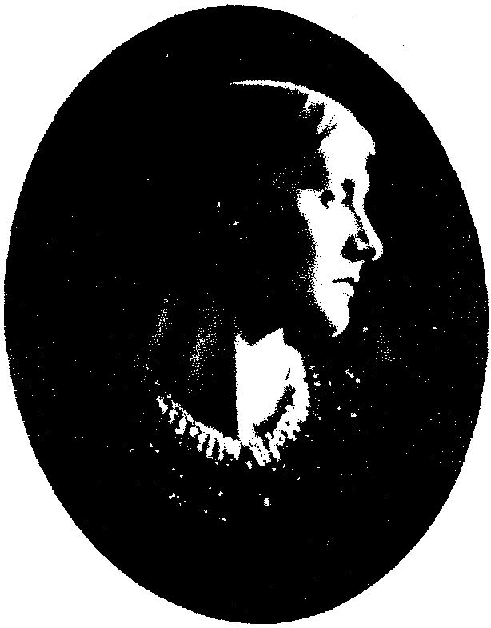

Bölüm 1
Virginia Woolf’un Ailesi, Çocukluk ve Gençlik Yılları
1882’de Londra’da dünyaya gelen Virginia Woolf, Victoria Çağı’nın tanınmış yazarlarından Sir Leslie Stephen’ın kızıydı. Annesi de babası da daha önce başkalarıyla evlenmişler, dul kalınca da bir araya gelmişlerdi. Her ikisinin de ilk eşlerinden çocukları vardı. Sir Leslie Stephen’ın ilk eşi, ünlü romancı Thackeray’nın kızıydı. Thackeray’nın eşi akıl hastası olduğundan, Leslie Stephen’ın bu kadından olan kızı Laura, anneannesine çekmiş, yirmi yaşında bir akıl hastahanesine kapatılmıştı. Virginia’nın annesi Julia Duckworth ile Leslie Stephen’ın beş çocukları oldu. Yaş sırasıyla Vanessa, Julian, Thoby, Virginia ve Adrian. Virginia on üç yaşındayken ansızın ölen annesi, hem Pre-Raphaelite ressamlarda hayranlık uyandıracak ve Burne-Jones’a modellik edecek kadar güzeldi, hem de melek huylu, son derece anlayışlı bir insandı. Romancı George Meredith, ona duyduğu derin saygıyı ömrü boyunca hiçbir kadına duymadığını söylemişti. Virginia Woolf’un en güvenilir yaşamöyküsünü yazan yeğeni Quentin Bell’e bakılacak olursa, her açıdan güzel olan bu kadının garip ataları varmış. Bunlardan biri Hindistan’da yüksek memurmuş. Fazla içtiği için ölünce, kendi isteği üzerine alkol dolu bir demir kasaya kapatılıp, İngiltere’ye sevk edilmiş. Ne var ki, yolculuk sırasında bir kaza olmuş. Kasa her nasılsa parlayıp tutuşmuş; ölü, patlayan kasadan dışarı fırlamış, gemide de yangın çıkmış.
Çağın çoğu aileleri gibi çok çocuklu olan Stephen’lar, özellikle varlıklı sayılmamakla birlikte yüksek orta sınıftandı. (Bilindiği gibi, İngiltere’de orta sınıf, yüksek orta sınıfa ve aşağı orta sınıfa bölünür; bunların arasında da dağlar kadar fark vardır.) Stephen’lar, Londra’da aydın bir çevrede, güzel bir semtte yaşarlar; yazlarını Cornwall bölgesinde St Ives’daki evlerinde, deniz kıyısında geçirirlerdi. Virginia Woolf, orasını çok severdi. “Pure sea-water on pure sand is almost the loveliest thing in the world” (Temiz kum üstünde temiz deniz suyu, dünyanın neredeyse en güzel şeyidir) der mektuplarından birinde. To the Lighthouse’da (Fener’e Doğru) ve The Waves’de (Dalgalar) denizin böylesine önemli bir yer tutmasının, çocukluk anılarından kaynaklandığı besbellidir.
Sir Leslie Stephen’ın çocukları, akıllarına eseni yaparak özgürce yaşamak istiyorlardı. Victoria Çağı’ndan kalan can sıkıcı ahlak kurallarına, tutucu törelere başkaldırıyorlardı. Özenle düzenledikleri bir şakadan da anlarız bunu: İngiltere’nin en büyük ve en yeni savaş gemisi Dreadnought’ta yapılan bu şaka, ülkenin çok satan gazetelerinden Daily Mirror’un 16 Şubat 1910 tarihli baş sayfasına manşet olmuş, bütün İngiltere’yi güldürmüştü.

Virginia Woolf’un annesi
Virginia’nın önerisi üzerine, kardeşi Adrian ve Cambridge’li üç arkadaşı, ustaca yapılmış makyajlar ve giysilerle, Habeş İmparatoru ve maiyeti kılığına girmişler, resmi bir heyet olarak törenle ağırlanmışlardı Dreadnought’ta. Aralarından biri, uydurma bir dille tercüman rolünü oynamış; heyet gemide gezdirilirken, İngiliz subaylarının açıklamalarını sözde Habeş diline çevirmişti. O sırada yirmi sekiz yaşında olan Virginia’nın, adı verilmeden, bıyıklı sakallı ve çok yakışıklı bir Habeş Prensi olarak büyük bir resmi de çıkmıştı gazetede.
Sir Leslie Stephen çoktan ölmüştü iyi ki. Çünkü çocuklarının böyle bir oyun oynamaları, bu saygıdeğer adamın yüreğine inerdi mutlaka. Sir Leslie Stephen, çağdaşlarınca saygıdeğer sayılan, ama aslında öyle olmayanlardan değildi. Gerçekten saygıya değer bir aydındı. Cambridge’i bitirdikten sonra, devletin resmi Kilisesine, yani Anglikan Kilisesi’ne din adamı olarak kabul edildi. Ama Hıristiyanlığa inancını yitirdiği ve agnostik bir tutum benimsediği için, Kilisede görev kabul etmedi. Babalarının bu uygarca tutumu sayesinde, Virginia ile kardeşleri, 1880’li yıllarda dünyaya gelen öteki çocuklar gibi dinsel baskı altında büyümediler.
Virginia Woolf’un babası
Virginia Woolf’un yaşamında, ne Hıristiyanlığın bir yeri oldu, ne de Tanrının. Sir Leslie Stephen üniversite öğretim üyesiydi. Hâlâ önemli bir başvuru kitabı sayılan The History of English Thought in the Eighteenth Century (XVIII. Yüzyılda İngiliz Düşünce Tarihi) ile otuza yakın başka kitap yayınladı. Bunların arasında Hours in a Library (Kitaplıkta Geçen Saatler); Pope, Swift, Dr. Johnson, George Eliot üzerine incelemeler de vardır. Cornhill Magazine gibi saygın bir dergiyi yönetti ve en önemlisi, İngiltere’nin kültür tarihinin başlıca anıtlarından biri olan Dictionary of National Biography’nin (Ulusal Biyografi Sözlüğü) editörlüğünü yaptı. Gelgelelim Virginia doğduğu sırada elli yaşında olan Sir Leslie Stephen, çocukları gibi bizim yüzyılımızın insanı değil, Victoria Çağı insanıydı. Gerçi o dönemin çoğu babalarından farklı olarak, kızının, evlerinin her bir yanını dolduran binlerce kitap arasında istediğini okumasına izin veriyordu; ama Thomas Hardy’nin güzel romanı The Return of the Native’i (Yerlinin Geri Dönüşü) “fazlasıyla tutkulu” (“too passionate”) buluyor; yönettiği dergide tefrika etmeye yanaşmıyordu.
Çocuklarına hiç de baskı yapmamakla birlikte, herkeste fazla saygı uyandıran bu baba, hiç farkına varmadan, salt kişiliğinin ağırlığıyla kızını eziyordu. Babasına duyduğu garezin, Virginia’nın feminizminin başlıca nedenlerinden biri olduğu hiç kuşku götürmez. Virginia Woolf, 1904’te kendisi yirmi iki yaşındayken ölen babasından, insanı üzen bir kinle söz eder. Annesi, kalabalık ailesine bakmak için fazla didindiğinden kırk dokuz yaşında ölürken, babasının “yetmiş iki yaşında kanserden ölmeye güç katlandığını” (“he found it difficult to die of cancer at seventy two”) söyler. Babasının kızına ancak köpeği kadar önem verdiğini belirtmek için, yürüyüşe çıkarken, “köpeğiyle kızını çağırdığını” (“calling for his daughter and his dog”) anlatır. Akıl dışı bir suçlamada bulunarak, Sir Leslie Stephen’ın Dictionary of National Biography gibi büyük bir yapıt üretmesinin, en küçük oğlu Adrian’ın yaşamını daha çocuk dünyaya gelmeden önce mahvettiğini ileri sürer. Virginia Woolf’un Aralık 1923’ güncesine bakılacak olursa, kendi akıl hastalığının nedeni de bu yapıttır:
“It gave me a twist of the head. I shouldn’t have been so clever, but I should have been more stable without that contribution to the history of England.”
(Benim kafamı burktu. İngiliz tarihine bu katkı yapılmasaydı, bu kadar zeki olmazdım; ama daha dengeli olurdum)
1928 tarihli güncesinde, babasının ölümünden yirmi dört yıl sonra bile, Sir Leslie Stephen’ın doğum gününde, onu kinle anar.
Virginia ve kızkardeşi Vanessa kriket oynuyor, 1894.
Salt ondan kurtulduğu için yaşayabildiğini, kitap yazabildiğini söyler:
“He could have been ninety six... But mercifully was not. His life would have entirely ended mine. What would have happened... No writing, no books.”
(Doksan altı yaşında olabilirdi şimdi... Şükür ki, olamadı. Onun yaşamı, benimkini tümüyle bitirirdi. Ne olurdu... Yazı yazmak yok, kitaplar yok. )
Virginia Woolf, aynı yıl To the Lighthouse’ı yazıp, o romanda Mr. Ramsay ile Mrs. Ramsay kişiliklerinde annesiyle babasını yeniden canlandırarak, baba kompleksinden kurtuldu. Güncesinde ve mektuplarında, babasını da, annesini de her gün düşündüğünü; her ikisinin de çok sağlıksız bir saplantı haline geldiğini; ama bu romanın, onlardan kurtulmasını sağlayan bir büyü olduğunu anlatır. Kendini öldürmeden birkaç ay önce, 22 Aralık 1940’da da, her zaman sevdiği annesinden ve hiçbir zaman sevmediği babasından hayranlık ve sevgiyle söz eder:
“How beautiful they were, these old people... I mean father and mother... How simple, how clear, how untroubled. I have been dipping into old letters and father’s memoirs. He loved her. Oh was so candid and reasonable and transparent. How serene and gay even their life reads to me: No mud, no whirl-pools. And so human.”
(Ne kadar güzeldiler onlar, o yaşlı insanlar... Yani babamla annem demek istiyorum. Öyle sade, öyle açık seçik, tedirginlikten öyle uzaktılar ki... Eski mektupların ve babamın anılarının şurasını burasını okudum. Annemi seviyordu. Ah, öyle saf, öyle aklı başında, öyle saydamdı ki! Onların yaşamı ne kadar huzurlu, hattâ ne kadar sevinçli görünüyor bana: Çamur yok, girdaplar yok. Ve öyle insanca ki!)
Virginia bu arada, ünlü Sir Leslie Stephen’ın kızı olarak, para ve mevkiden fazla kültüre önem veren aydın bir çevrede yetişmenin; büyük bir kitaplıktan canı istediği gibi yararlanabilmenin; akşamları Henry James, Thomas Hardy, George Meredith gibi büyük yazarların sohbetini dinlemenin; Walter Pater’in çok bilgili kız kardeşinden Yunanca özel ders alabilmenin, kafasının gelişmesinde ne denli olumlu bir rol oynadığını da anlamıştı belki de.
Virginia, babasının ölümünden sonra, kardeşleriyle birlikte Bloomsbury mahallesine yerleşti. Artık baba evinde değil, kendi evlerinde oturuyorlar; babalarının yaşlı dostlarıyla değil, kendi genç dostlarıyla görüşüyorlardı. Virginia, tamamiyle özgürdü. Ama özgürlüğüne kavuşan öteki genç kızlardan farklı olarak, durumundan yararlanıp erkeklere yakınlık göstermiyordu. Oysa elimizde yığınla fotoğraf bulunduğundan, annesi gibi bir afet olmamakla birlikte, gençliğinde de, orta yaşlıyken de, her erkekte hayranlık uyandıracak kadar güzel olduğunu biliyoruz. Romancı Rosamond Lehman, onun çok ince, uzun boylu ve “son derece güzel” (“extremely beautiful”) olduğunu; hüzünlü büyük gözleri ve çarpıcı yüz hatlarıyla Ortaçağın Meryem Analarını andırdığını anlatır. Ellerinin biçimli inceliği üstünde ayrıca durur. Virginia Woolf’un elleri öyle saydammış ki, onları şöminenin ateşine tutunca, derinin altında incecik kırılgan kemikleri görür gibi olurmuş insan. Uzaktan akrabası Dr. Janet Vaughan, onun güzelliğinin tenin rengi ve tazeleği gibi gelip geçici şeylerden değil, kemik yapısından kaynaklandığını; bu yüzden de, gençken de, yaşlıyken de güzel kaldığını söyler. Şair Edith Sitwell “she had a moonlit, transparent beauty” (onun ay ışığında aydınlanmışcasına saydam bir güzelliği vardı) der. Vita Sackville-West’in oğlu olduğu için Virginia Woolf’u çocukluğundan beri tanıyan Nigel Nicolson, İngiliz dilinde, “pretty” ile “beautiful” arasındaki büyük farkı vurgulayarak, onun hiçbir zaman “pretty” olmadığını, ama her zaman “beautiful” olduğunu söyler. Eşi Leonard Woolf da, onun “intense” (yoğun) ve “ethereal” (semavi) izlenimini veren güzelliği üstünde durur. Bu güzelliğin, ancak Virginia akıl dengesini yitirdiği sıralarda ansızın değişime uğradığını; o zaman, yüzünün yalnız ifadesinin değil, hatlarının bile değiştiğini; insana acı veren bir güzelliğe dönüştüğünü söyler. Güzelliği bir yana, Virginia Woolf, biraz kalınca, hattâ telefonda erkek sesini andıran sesiyle de kendini dinleyenleri büyülermiş. Süsüne düşkün olmadığı halde, her zaman çok bol olan ve başka kadınların giysilerine pek benzemeyen giysileriyle de çok çarpıcı bir kadınmış.